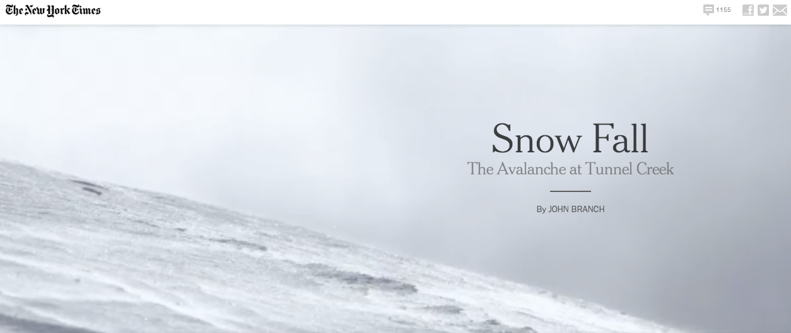
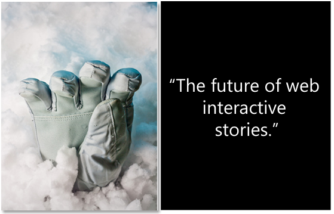
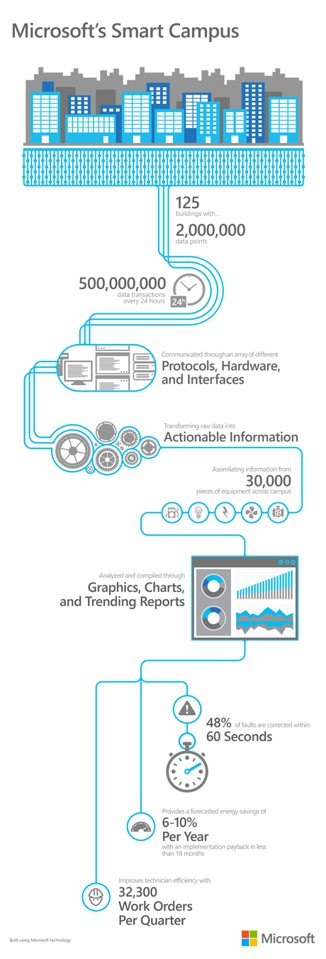
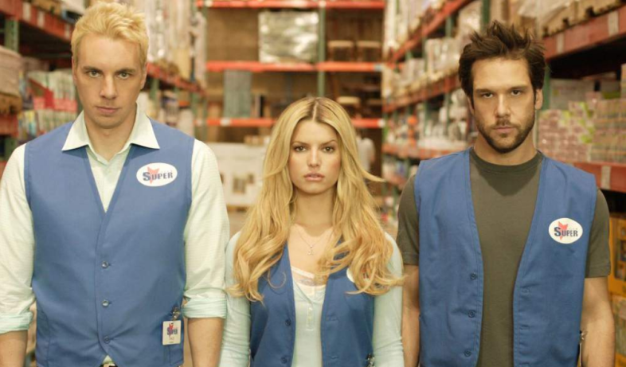

THIS IS A PRESENTATION
gavvy and jamiemramos
Decemeber 5, 2016
This is an example.
A story is a narrative designed to interest, amuse or instruct the reader.
Tell engaging stories



“World’s greatest business storyteller” -Forbes

Prepare yourself for a tech world.